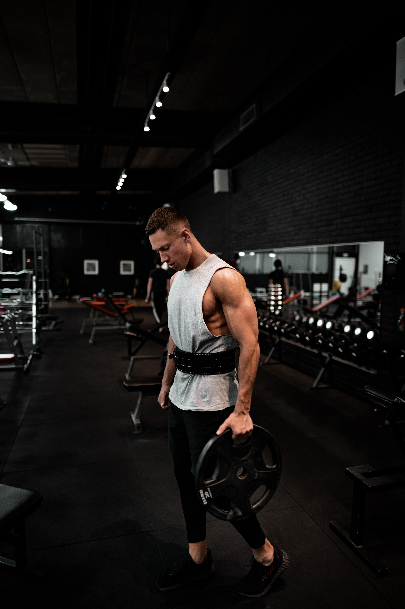
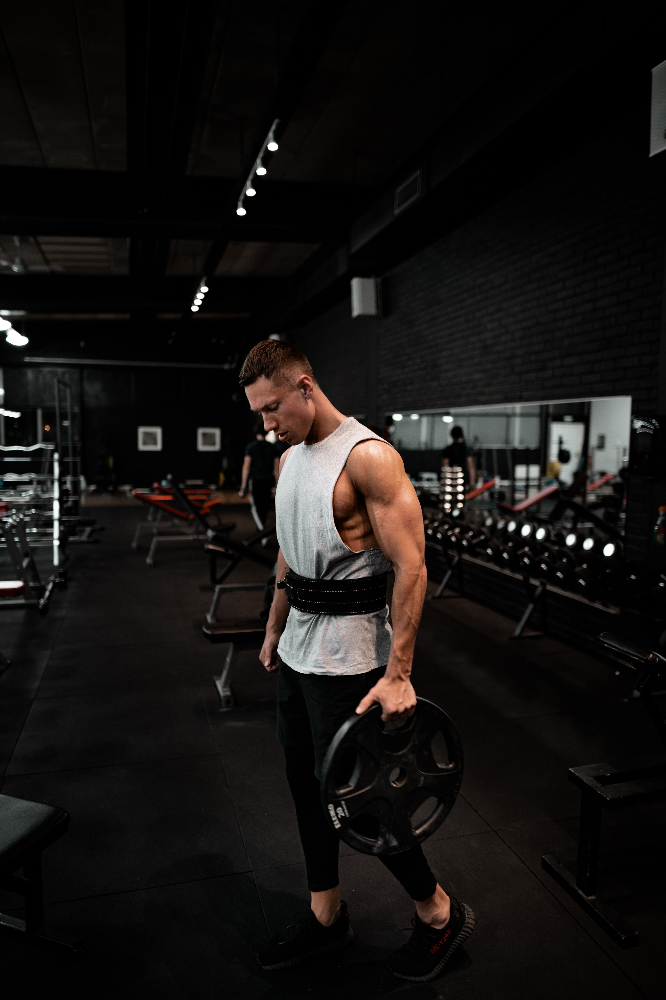

- LOS OBSTÁCULOS NO TIENEN QUE FRENARTE. SI TE ENCUENTRAS CON UNA PARED,
NO DAS LA VUELTA Y ABANDONAS. ENCUENTRAS LA MANERA DE SUBIR A ELLA,
PASAR A TRAVÉS DE ELLA O RODEARLA. -
MICHAEL JORDAN
- EL DOLOR ES TEMPORAL. PUEDE DURAR UN MINUTO O UNA HORA O UN DÍA, O UN
AÑO, PERO CON EL TIEMPO VA A DISMINUIR Y ALGO MÁS TOMARÁ SU LUGAR. SIN
EMBARGO, SI ABANDONO, ESO DURARÁ PARA SIEMPRE. -
LANCE ARMSTRONG
- LA MENTE ES EL LÍMITE. MIENTRAS QUE LA MENTE PUEDE IMAGINAR EL HECHO
DE QUE PUEDES HACER ALGO, LO PUEDES HACER, SIEMPRE Y CUANDO REALMENTE LO
CREES 100 POR CIENTO. -
ARNOLD SCHWARZENEGGER
- HAY MUCHA GENTE QUE SE ESFUERZA CADA DÍA Y NO TIENE LA SUERTE DE
LLEGAR A LA CIMA. LO IMPORTANTE ES EL CAMINO, PENSAR EN EL DÍA A DÍA,
PENSAR QUE LAS COSAS VAN A LLEGAR. -
RAFAEL NADAL
- EL ASCENSOR HACIA AL ÉXITO ESTÁ FUERA DE SERVICIO; TIENES QUE SUBIR
LAS ESCALERAS POCO A POCO. -
MIREIA BELMONTE
- CUANDO TENGA 50 AÑOS MIRARÉ LOS TROFEOS QUE HE CONSEGUIDO, PERO HOY NO
ME SIRVEN DE NADA. QUIERO VOLVER A GANAR. -
FERNANDO ALONSO


 
